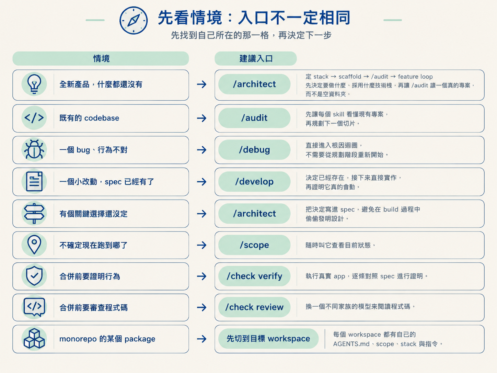
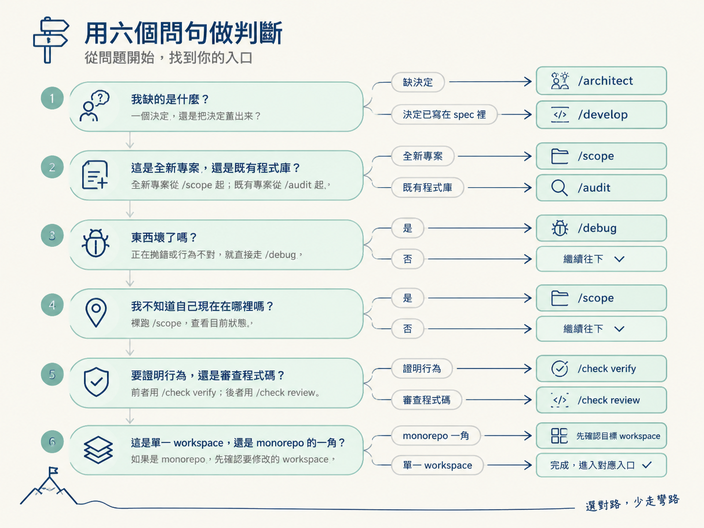

上一節把九個 skill 放上生產線，現在知道每一站負責什麼了。真正卡住時，問題卻常常變成：「我知道有 /architect，但現在該先做決定嗎？」「這個 bug 要不要先跑 /scope？」「選了 GA 深度，是不是每一項檢查都不能跳過？」
這一節要把靜態地圖變成現場能用的判斷規則。你會在兩股力量之間做選擇：一邊想從頭到尾照流程跑，另一邊知道眼前的問題可能只需要一兩站。重點是先辨認：你現在缺的是決定、實作、證明、審查，還是狀態？不必把整條路都背下來。
下表只是把常見處境對應到最可能補上缺口的入口，不是硬性規定。先找到自己所在的那一格，再決定下一步。
| 你的處境 | 建議的入口 | 為什麼是它 |
|---|---|---|
| 全新產品，什麼都還沒有 | /scope → /architect 定 stack → scaffold → /audit → feature loop | 先決定要做什麼、採用什麼技術堆疊，再讓 /audit 讀一個真的專案，而不是空資料夾 |
| 既有的 codebase | /audit → /scope → feature loop | 先讓每個 skill 看懂現有專案，再規劃下一個切片 |
| 一個 bug、行為不對 | /debug | 直接進入根因迴圈，不需要從規劃階段重新開始 |
| 一個小改動，spec 已經有了 | /develop → /check verify | 決定已經存在，接下來直接實作，再證明它真的會動 |
| 有個關鍵選擇還沒定 | /architect | 把決定寫進 spec，避免在 build 過程中偷偷發明設計 |
| 不確定現在跑到哪了 | 裸 /scope | 隨時叫它查看目前狀態 |
| 合併前要證明行為 | /check verify | 執行真實 app，逐條對照 spec 證明 |
| 合併前要審查程式碼 | /check review | 換一個不同家族的模型來閱讀程式碼 |
| monorepo 裡的某個 package | 先切到目標 workspace | 每個 workspace 都有自己的 AGENTS.md、scope、stack 與指令 |

另一個常見抉擇是：「這次要做到多嚴謹？」這套流程用四種深度描述 /develop 之後的檢查尾巴。你可以在 /scope 結尾選一個，也能針對個別功能覆寫。
| 深度 | 在 /develop 之後加上什麼 | 適合 |
|---|---|---|
| Prototype | 只有 /develop，自己檢查 | 用完就丟的實驗 |
| Alpha | /check verify | 要確認東西真的會動 |
| Beta | /test | 要留下可重複執行的測試 |
| GA | 換模型的 /check review 與 /document | 準備正式出貨與對外說明 |
這張表像點餐單，不是把你綁住的鐵軌。深度只是建議你在 /develop 後往哪裡走；你可以跳過某一項，也可以之後補上 /check verify，還能隨時把某個功能標成 done。
所以選 GA 不代表每一項都非跑不可，選 Prototype 也不代表之後不能補檢查。深度只是預設值，決定權還是在你手上。
站在路口時，不必回想整張流程圖。依序問自己下面幾句，通常就能找到入口：
/architect；決定已經寫在 spec 裡，就去 /develop。/scope 起；既有專案從 /audit 起，因為 /audit 需要先讀懂真的專案。/debug，不必先重新規劃。/scope，查看目前狀態。/check verify；後者用 /check review。它們處理的是不同問題。
最常見的錯誤，是想著「穩一點，九站全部跑一遍」。這套流程並沒有要求每個情境都從頭走到尾。硬跑只會浪費時間，還可能讓你分心在與當前問題無關的檢查上。
真正該守住的界線只有一條：一個 load-bearing 的關鍵決定，必須被寫下來。
反過來，「這只是個小 bug，應該不用麻煩」也可能判斷錯。如果問題其實牽涉到尚未決定的設計選擇，那它就不只是 bug，而是少了一個決定。界線跟改動大小無關，真正的判準是：有沒有一個決定被默默發明出來。
深度也容易被誤讀。選 Prototype 不代表你之後不能反悔；深度只是預設，可以隨時覆寫。但如果某個決定被 /develop 以 Assumed 的方式先蓋過去，它就會持續掛著「欠 ratification」的標記，直到 /architect 回來處理。
導航時先問：「我現在缺的是哪一種東西？」缺決定去/architect，缺實作去/develop，缺行為證明去/check verify，缺程式碼審查去/check review，缺測試去/test，缺文字去/document，缺狀態對齊去/sync，東西壞了去/debug，迷路就裸跑/scope。全新專案從/scope起，既有專案從/audit起，monorepo 則先切到目標 workspace。深度是選單，不是軌道。
下一次卡住時，先說出「我缺的是什麼」，再選入口。這個判斷完成後，流程才會往前走。接下來還有一個共同動作會出現在真正改檔案之前：檢查 git 狀態。下一節會說明 skill 什麼時候碰 git、什麼時候刻意不碰，以及動手前那幾項便宜卻重要的檢查。